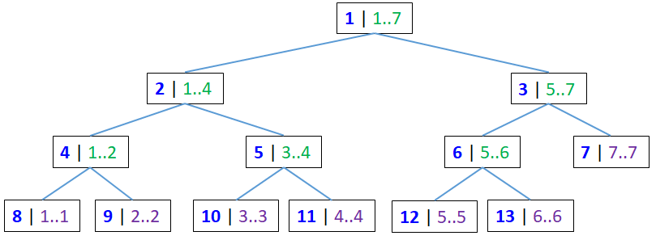

Cho dãy số A với N phần tử (N≤50,000). Bạn cần thực hiện 2 loại truy vấn:
Đối với truy vấn loại 1, nếu ta dùng cách cập nhật từng phần tử như hàm update() thì sẽ tốn nhiều thời gian. Độ phức tạp sẽ là O(n.logn).
Giả sử ta cần tăng đoạn 1..5 thêm x. Khi đó, các nút sau phải thay đổi: 8, 9, 10, 11, 12, 4, 5, 6, 2, 3, 1.
Thay vì vậy, ta chỉ cập nhật các nút 2, 12, 6, 3, 1.
Các nút 4, 5, 8, 9, 10, 11 sẽ cập nhật sau, ta sử dụng 1 biến nhớ tại nút 2 để lưu giá trị cần cộng thêm cho tất cả các nút hậu duệ của nó.
Khi nào ta cập nhật tới các nút này (4, 5, 8, 9, 10, 11) ?
Ngoài mảng H[], ta còn dùng thêm mảng Nho[], ban đầu bằng 0 hết.
void update(int v, int l, int r, int p, int q, int g) { if (q < l || r < p) return ; if (p <= l && r <= q) { H[v] += g; Nho[v] += g; return ; } int mid = (l + r) / 2; H[2*v] += Nho[v]; Nho[2*v] += Nho[v]; H[2*v+1] += Nho[v]; Nho[2*v+1] += Nho[v]; Nho[v]=0; update(2*v, l, mid, p, q, g); update(2*v+1, mid+1, r, p, q, g); H[v] = max(H[2*v], H[2*v+1]); }
int getmax(int v, int l, int r, int p, int q) { if (q < l || r < p) return -INFINITY; if (p <= l && r <= q) return H[v]; int mid = (l + r) / 2; H[2*v] += Nho[v]; Nho[2*v] += Nho[v]; H[2*v+1] += Nho[v]; Nho[2*v+1] += Nho[v]; Nho[v]=0; return max(getmax(2*v, l, mid, p, q), getmax(2*v+1, mid+1, r, p, q)); }